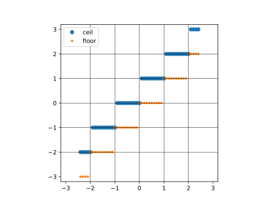
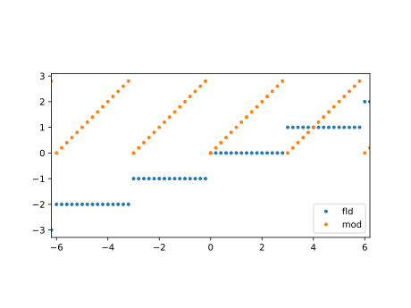
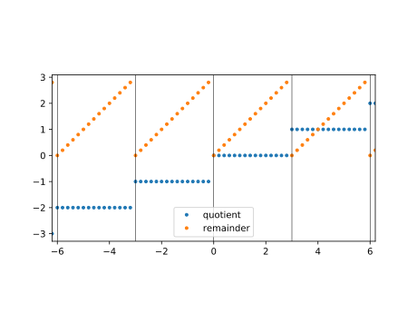

第6回：■ 型・■ 整数型
■ 型
データの種類のこと
julia> typeof(1)
Int64
julia> typeof(1.0)
Float64Primitive types 基本型
Composite Types 複合型, 構成型
■ 整数
2進数 64桁 (64bit, binary digit)
符号付整数
2の補数「負の数 $-n$ を $2^{64}-n$ で表す方式」
julia> typemax(Int64)
9223372036854775807
julia> typemin(Int64)
-9223372036854775808julia> typemax(Int64)+1
-9223372036854775808■ 整数を 0 で割ると例外を発生する
除算例外
■ 整数と浮動小数点数の演算
除算の結果は、浮動小数点数になる
julia> 1 / 2
0.5
julia> 1.0 / 2.0
0.5▶︎ 浮動小数点数から整数への変換
julia> Int64(1.0)
1
julia> Int64(1.1) # エラー
ERROR: InexactError()
julia> Int64(floor(1.1))
1▶︎ 床関数・天井関数
using PyPlot
xs=-2.4:0.1:2.4
plot(xs, ceil.(xs), "o", label="ceil")
plot(xs, floor.(xs), ".", label="floor")
for x in -2:2
axvline(x, color="k", lw=0.5)
end
legend()
xlim(-3,3)
ylim(-3,3)
plt[:axes]()[:set_aspect]("equal")
▶︎ ユークリッドの互除法
2 つの自然数 a, b (a ≧ b) について、a の b による剰余を r とすると、 a と b との最大公約数は b と r との最大公約数に等しいという性質が成り立つ。この性質を利用して、 b を r で割った剰余、 除数 r をその剰余で割った剰余、と剰余を求める計算を逐次繰り返すと、剰余が 0 になった時の除数が a と b との最大公約数となる。
julia> a=1071
1071
julia> b=1029
1029
julia> @show a,b
(a, b) = (1071, 1029)
(1071, 1029)
julia> while b != 0
t = a
b = rem(a, b)
a = t
@show a,b
end
(a, b) = (1071, 42)
(a, b) = (1071, 21)
(a, b) = (1071, 0)
julia> @show a,b
(a, b) = (1071, 0)
(1071, 0)julia> a=3355
3355
julia> b=2379
2379
julia> @show a,b
(a, b) = (3355, 2379)
(3355, 2379)
julia> while b != 0
t = a
b = rem(a, b)
a = t
@show a,b
end
(a, b) = (3355, 976)
(a, b) = (3355, 427)
(a, b) = (3355, 366)
(a, b) = (3355, 61)
(a, b) = (3355, 0)
julia> @show a,b
(a, b) = (3355, 0)
(3355, 0)▶︎ 商・剰余関数
using PyPlot
xs=-6.8:0.2:6.8
d=3
plot(xs,fld.(xs,d), ".", label="fld")
plot(xs,mod.(xs,d), ".", label="mod")
legend()
xlim(-6.2,6.2 )
legend()
plt[:axes]()[:set_aspect]("equal")
同じことは床関数でも書ける。
using PyPlot
xs=-6.8:0.2:6.8
d=3
qs=floor.(xs/d)
rs=xs-qs*d
plot(xs, qs, ".", label="quotient")
plot(xs, rs,".", label="remainder")
for x in -9:d:9
axvline(x, color="k", lw=0.5)
end
xlim(-6.2,6.2 )
legend()
plt[:axes]()[:set_aspect]("equal")
◀︎ 切り捨てるには？
10の位で
100の位で
1000の位で
0.1の位で
一般に$10^{n}$の位で
◀︎ 四捨五入するには？
1の位で
10の位で
100の位で
1000の位で
0.1の位で
一般に$10^{n}$の位で